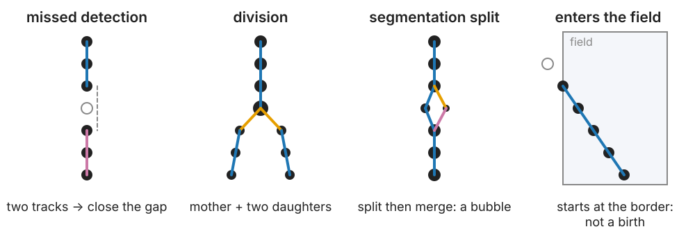
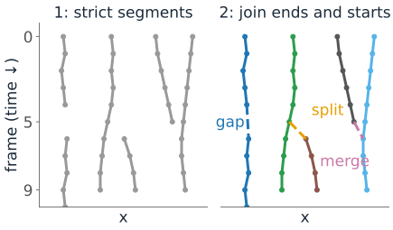
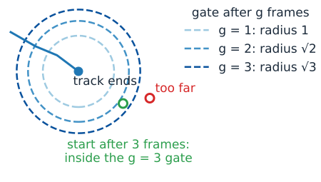
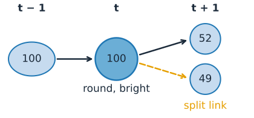
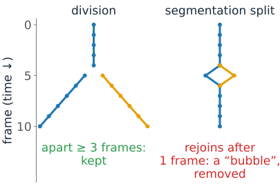
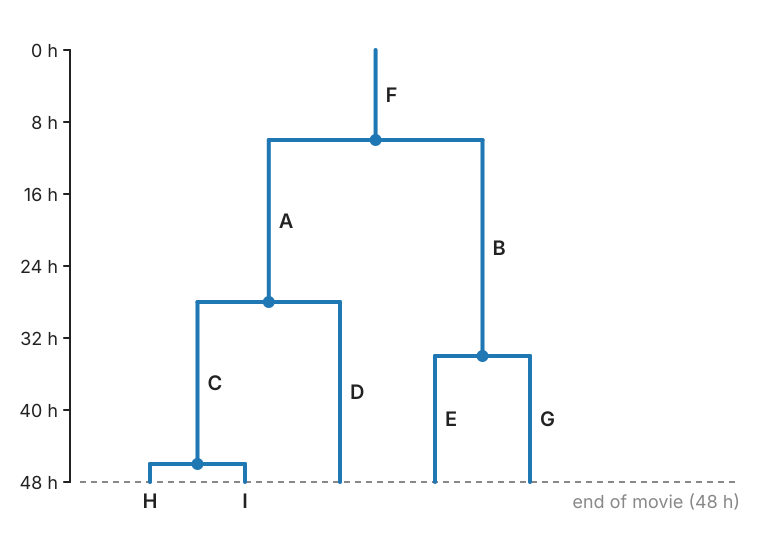
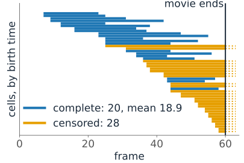

Frame-to-frame linking gives pieces of tracks. Real movies break them: missed detections, cells that divide, objects that touch, objects that enter or leave.
What breaks a track.
Two-stage linking: reliable pieces first, then join them: gap closing, splitting, merging.
A split is not always a division.
The track graph and the lineage tree; cell-cycle times and censoring.
Slides titled The math give the formulas and proofs; the ideas are complete without them.
What breaks a track

Missed detection (blinking, out of focus, too dim): one track becomes two.
Division: one cell becomes two.
Touching objects detected as one (a merge), or one cell cut in two by the segmentation (a split).
Objects enter or leave the field (or the focal plane). And a false detection starts a short spurious track.
Two stages
The standard recipe (Jaqaman et al., 2008):
Frame to frame (the first unit), with strict gates: short, reliable segments.
One more global assignment over the segment ends and starts. Each end and each start may:
close a gap: an end at t joins a start at t+2, \dots, t+G+1 (up to G missed frames);
split: a start joins the middle of another segment one frame earlier (a division);
merge: an end joins the middle of another segment one frame later;
or stay a real end or start, at an alternative cost, as in the first unit.

Each option has a cost; the assignment picks the cheapest consistent set.
Gap closing
A track ends at frame t; another starts at t + g nearby. Same object, missed g - 1 times?
Allow gaps up to G frames, and a larger gate for longer gaps: the object may have moved further. For random motion the gate grows as \sqrt g, for directed motion as g. A Kalman prediction (previous unit) gives the natural gate.
Cost: the squared distance per frame elapsed, so long gaps are not penalised for the extra distance they need.
G too large: an end can join a start of a different object, especially with false detections around.

The math: how far in a gap?
For a random walk in d dimensions, the displacement over g frames is the sum of g independent steps, each with variance 2D\Delta t per axis:
E|\Delta\mathbf r_g|^2 = 2dD\,g\Delta t, \qquad \text{so a gate of } k \text{ standard deviations has radius } k\sqrt{2D\Delta t}\,\sqrt g.
The cost |\Delta\mathbf r|^2/g is the squared distance in units of the expected squared step: the minus log-likelihood of a g-frame jump, up to a \log g term.
For directed motion with speed v the jump is about vg\Delta t: the gate grows linearly in g. A Kalman filter predicted over g frames gives both cases from its covariance.
Divisions
At a division the mother’s track ends next to two new starts. Cues beyond distance:
the two daughters have about half the mother’s area (their areas add up to hers);
just before dividing the mother is often bright and round (mitosis);
the daughters move apart on opposite sides of the mother.

A division is a mother and both daughters. In the two-stage scheme: frame-to-frame linking continues the mother into one daughter, and a split joins the other daughter’s start to the mother.
A split is not always a division
The segmentation can cut one cell in two for a frame; the pieces rejoin in the next: a split followed by a merge, a small “bubble” in the graph.
Keep what the linking observed; decide what it means in a separate step. For example: a division must be followed by two daughters that stay separate for k frames.

Likewise, a track that ends is not a dead cell, and one that starts is not a newborn. Record why each track starts and ends: first or last frame, near the border, after a gap, at a division, at a merge, or unexplained.
Entering and leaving
Objects cross the image border, or the focal plane.
Tracks that start or end within a border band are “entered” or “left”, not births or deaths.
The same idea as the border rule for counting objects on the labelling day: objects cut by the border are incomplete, and statistics must say so.
A track that starts in the middle of the field, away from any division, with no gap before it: unexplained. Many unexplained starts and ends point at missed detections or too strict gates.
The math: the segment-linking matrix
Rows: segment endsE and split candidatesM_s (detections in the middle of a segment that may send a second link). Columns: segment startsS and merge candidatesM_m. Square augmented matrix:
with C_\text{gap} (E \times S), C_\text{merge} (E \times M_m), C_\text{split} (M_s \times S), and diagonal alternative blocks D, B (∞ off the diagonal).
Every row and column has its own alternative (“stay an end”, “no split here”); the zero block pairs the leftover dummies.
Split and merge costs: squared distance times an area factor\max(\rho, 1/\rho)^2, with \rho = mother area / sum of the daughters’ areas.
Alternative costs are often set from the data: a high percentile of all candidate costs, times a factor slightly above 1.
Try it: gaps and divisions
The track graph and the lineage tree
Track graph: nodes = detections, edges = links of four kinds (continue, gap, divide, merge). A track = a maximal chain without branches.
Lineage tree: one branch per cell, time downwards, a fork at each division.

Reading it: cell-cycle time = time from a cell’s birth (its mother’s division) to its own division (A: 28 − 10 = 18 h); generation = number of divisions since the founder; sisters share a mother (A and B).
Censoring: what the movie cannot see
A movie has a start and an end. Cycles that start before or end after it are incomplete (censored).
In a 48 h movie, cells born late cannot finish a 20 h cycle before the end. Only short cycles complete near the end.
Measuring cycle times only on complete cycles therefore under-estimates the mean: slow cells are missing.
Counting incomplete cycles as if complete is worse.
Report how many cycles were incomplete; use methods that include censored times (survival analysis), or restrict to cells born early enough.

In the demo (cycle mean 26 frames, 60-frame movie): the 20 complete cycles average 18.9.
Evaluating tracks
Needs a reference (manual, or simulated) on the same detections.
Links: TP (in both), FP (only in the result), FN (only in the reference): precision, recall, F1, as for objects on the evaluation day.
Divisions: correct only if the mother and both daughters match. One wrong daughter = 1 FP + 1 FN.
Complete tracks: the fraction of reference tracks reconstructed without any error; shows the compounding of the first unit.
Identity switches at crossings.
If the detections themselves differ from the reference, first match detections per frame (by distance or overlap), then compare links. Evaluate only where the reference is complete: a link missing from an incomplete reference is not an error.
The math: whole-movie linking as a flow
Frame by frame is fast, but each decision sees only two frames. Linking without divisions over the whole movie at once is a minimum-cost flow (Zhang et al., 2008; recall max-flow on the graph-cut day):
every detection is a node with capacity 1 (split into an in-node and an out-node joined by an edge of capacity 1): it belongs to at most one track;
source → node: start cost; node → sink: end cost; node at t → node at t' > t: link cost (gap links included);
each unit of flow from source to sink is one track; the minimum-cost flow (over all flow values) is the best set of tracks.
Integer flows are optimal because the constraint matrix is totally unimodular. Divisions break this structure (one node feeds two).
Compounding again: a track of T links with error rate e per link is perfect with probability (1-e)^T \approx e^{-eT}; it has eT errors on average.
Summary
Missed detections, divisions, merges, splits and border crossings break tracks.
Two stages: strict frame-to-frame segments, then one global assignment over ends and starts: gap closing (gate ∝ √gap for random motion), splitting, merging, or real ends and starts.
A split is not always a division: keep the graph, interpret it separately (the k-frame rule); record why tracks start and end.